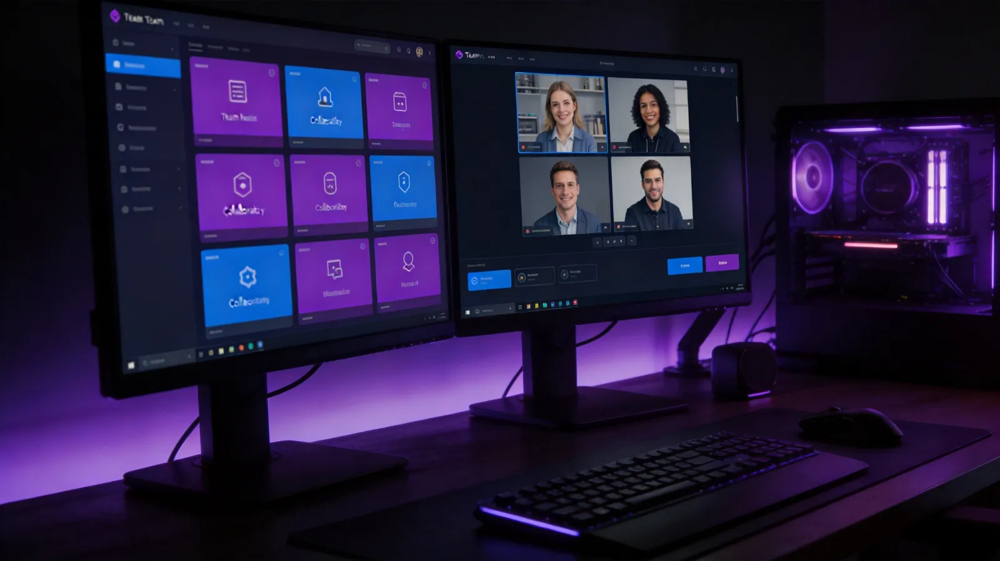

全球超过3.2亿用户的企业级协作平台。 Teams PC版 提供流畅的即时通讯、HD视频会议和深度Office集成，让您的团队在任何设备上都能高效协作。聊天切换速度提升20%，卡顿减少35%。

Teams 桌面版为您提供全方位的团队协作能力，覆盖沟通、会议、文件、安全等核心场景
频道讨论、私聊、群组消息，支持富文本、表情回复和@提及，让沟通高效有序。
支持最多1000人同时在线会议，屏幕共享、会议录制、虚拟背景和实时字幕功能一应俱全。
深度集成Office 365，Word、Excel、PPT多人同时编辑，版本自动保存和回溯。
无缝接入Planner、OneNote、SharePoint、Trello等数百款第三方应用，打造统一工作台。
智能会议摘要、自动生成待办事项、会议纪要一键导出，让AI成为您的效率加速器。
端到端数据加密、DLP数据防泄漏策略、eDiscovery合规审计，满足全球监管要求。
Windows、macOS、iOS、Android和Web五端数据实时同步，随时随地切换设备继续工作。
Teams直播最多支持万人观看，网络研讨会支持互动投票和分组讨论，满足大型活动需求。
了解 Microsoft Teams 桌面版的详细技术规格
| 软件名称 | Microsoft Teams（微软Teams桌面客户端） |
| 最新版本 | 2026年最新版（聊天切换速度提升20%，卡顿减少35%） |
| 安装包大小 | 约 280MB |
| 系统要求 | Windows 10/11 x64、macOS 10.15+、iOS 14+、Android 8.0+ |
| 开发商 | Microsoft Corporation |
| 语言支持 | 中文（简体/繁体）、英语、日语、法语等44种语言 |
| 许可类型 | 免费版 / Microsoft 365 商业版 / 企业版 |
| 网络要求 | 宽带连接（视频会议建议上传/下载速度≥1.5Mbps） |
Teams 桌面版适用于各类企业和个人协作场景
通过端到端加密、条件访问策略和数据防泄漏（DLP）机制，确保企业敏感信息在协作过程中不被泄露。IT管理员可统一管理数百个团队的安全策略，满足金融、医疗等行业的合规要求。
跨国团队通过Teams频道实现异步协作，实时翻译消息打破语言壁垒，不同时区成员可灵活参与讨论。文件在SharePoint云端统一存储，权限精细管控，确保全球分支机构高效联动。
AI Copilot自动生成会议摘要和待办事项，参会者可回顾关键时刻回放。支持分组讨论室、举手投票、实时字幕翻译，让百人大会也井井有条，大幅提升会议效率和决策质量。
将Planner任务看板、OneNote笔记、Power BI报表等工具直接嵌入Teams频道，团队成员无需切换应用即可完成项目管理、文档编写和数据分析，打造真正的一站式数字化工作空间。
关于 Teams 桌面版下载与使用的热门问题
Teams桌面版支持后台常驻消息通知、屏幕共享、虚拟背景、会议录制等高级功能，而网页版功能受限且无法使用本地摄像头的高级设置。桌面版还能深度集成Office应用，实现文件实时协作编辑，整体性能和稳定性远优于网页端。
Teams安装包约280MB，安装完成后占用约1.5GB磁盘空间。建议预留至少3GB可用空间以确保缓存文件和会议录制的正常存储。系统需为Windows 10或Windows 11的64位版本，且需4GB以上内存。
Teams闪退通常由缓存损坏或GPU加速冲突引起。可以尝试清除%AppData%\Microsoft\Teams目录下的缓存文件，或在Teams快捷方式属性中添加--disable-gpu参数禁用硬件加速。更新至2026最新版本也能有效解决大部分稳定性问题。
Teams桌面版支持有限的离线功能，包括查看已缓存的聊天记录、浏览已下载的文件和查看离线日程。但发送消息、参加视频会议和文件协作编辑等功能需要网络连接。重新上线后会自动同步离线期间的更新。
在视频会议界面点击"效果与头像"即可选择虚拟背景或模糊背景。噪音消除功能可在设置→设备→噪音消除中选择不同的消除级别，包括低、中、高三个等级。2026版本还新增了AI驱动的噪音消除，能有效过滤键盘声、宠物叫声等突发噪音。
Microsoft Teams允许同一账号在最多10台设备上同时登录，包括PC、手机、平板等不同平台。所有设备间的消息和文件会实时同步，确保您在任何设备上都能无缝衔接工作内容。但同一时间只能在一个设备上使用摄像头和麦克风。
如果管理员开启了保留策略，被删除的消息在21天内可由用户自行恢复。操作路径：设置→消息和聊天→已删除消息→恢复。超过保留期的消息需要联系IT管理员从合规中心恢复。建议定期导出重要聊天记录作为备份。